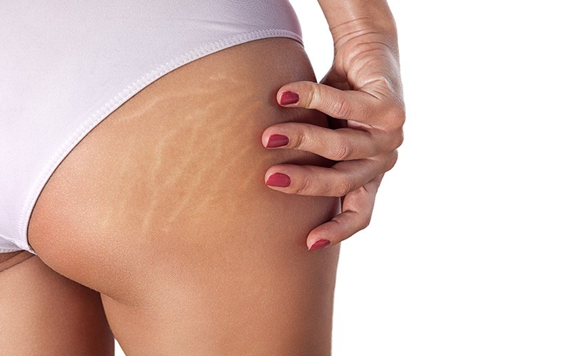

Navegue pelo site para conhecer meus serviços
Estou no seu aguardo, não esqueça de agendar uma consulta !
O médico dermatologista com especialização em tricologia é o profissional com conhecimento profundo sobre a área dos cabelos, couro cabeludo e pêlos do corpo.
Através desse conhecimento e de exames específicos podemos identificar, diagnosticar e tratar desordens dos fios e couro cabeludo, aumentando a auto-estima do paciente e controlando a queda, afinamento ou outras questões relacionadas.
Dr. Alberto Rodrigues de Castro é médico Dermatologista e Tricologista certificado pela Sociedade Brasileira de Dermatologia, com anos de experiência e mais de 8.000 pacientes atendidos.
Contamos com tricoscopia digital e os mais modernos tratamentos em todas as nossas unidades para atender nossos pacientes da melhor maneira possível.
LIPOENZIMÁTICA CORPORAL - A lipoenzimática corporal é um procedimento minimamente invasivo que consiste na aplicação de substâncias lipolíticas em regiões com acúmulo de gordura, promovendo o seu esvaziamento.
Na prática, as substâncias estimulam o metabolismo local, favorecendo a quebra das células de gordura e a sua eliminação natural.
ESTRIAS - As estrias são lesões que surgem em decorrência da destruição de fibras elásticas e colágenas, geralmente após o crescimento acelerado, ganho de peso, gestação ou hipertrofia muscular.
Para tratar as estrias, é interessante recorrer a protocolos que ajudem a regenerar a pele e estimular a síntese de novas fibras de colágeno.
A harmonização facial é um conjunto de técnicas e procedimentos que busca corrigir insatisfações estéticas dos pacientes, ressaltar seus pontos positivos e atenuar os efeitos do envelhecimento na face, tornando as regiões do rosto mais proporcionais entre si.
Quando feita por especialistas com experiência, a harmonização tende a proporcionar excelentes resultados, sem perder a naturalidade.